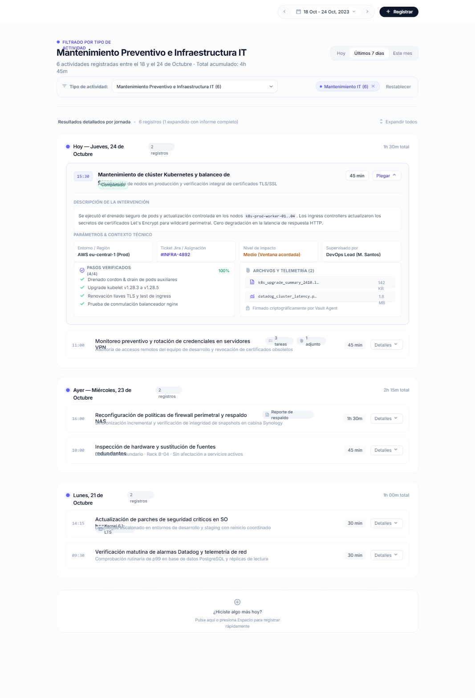

Transformando el trabajo de campo de Epson mediante trazabilidad digital y validación fotográfica en tiempo real.
El seguimiento uno a uno de envíos provocaba embotellamientos a fin de mes.
Aunque clasificado en Drive, demandaba días descargar y validar cientos de fotos.
Trabajo puramente manual y no escalable para lograr entregar las evidencias al cliente.
Reemplazar con Captura del Flujo de Trabajo (Drive / PPT antiguo)
El promotor reporta desde la tienda, subiendo evidencia inmediata e inalterable.
Los supervisores auditan y aprueban trazabilidad al instante, sin depender de descargas ni cruces en Excel.

Transformamos semanas de recolección manual de evidencias en reportes generados automáticamente.
Adaptación inmediata a nuevos requerimientos del cliente sin incurrir en mayores costos de desarrollo.
Reemplazar con Captura de los Reportes Estadísticos